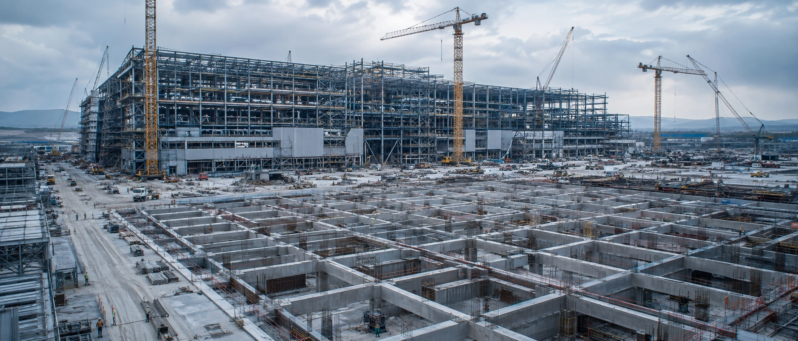
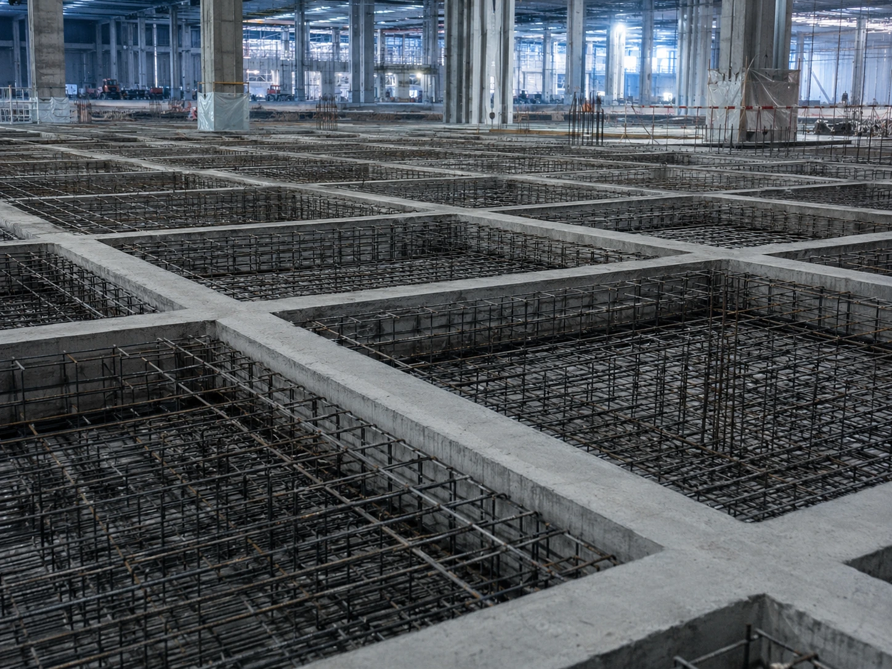

廠房基建工程
先進廠房的良率從地基開始——微振動、荷重與擴建彈性，都在第一張總圖就決定。 TeraFab 從廠區總體規劃到結構竣工驗收，管理每一項會影響未來三十年的基建決策。

SCOPE · 服務範疇
我們負責的事
廠區總體規劃
Master Plan 總圖配置與分期擴建藍圖，預留公用容量、動線與後續 Fab 用地。
結構與微振動設計
依 VC-C~VC-E 振動準則進行結構動力設計，配置隔振縫隔離振動源與製程區。
華夫板與樓板工程
華夫板（waffle slab）設計與施工管理，樓板平整度與開孔模組管制。
鋼構與圍護工程
大跨距鋼構屋架、外牆板與屋面系統之設計整合、發包與吊裝施工管理。
人流物流動線
人員更衣入廠、物料進出、貨梯配置與緊急逃生動線之整體規劃。
CUB 中央公用廠房
公用系統集中配置與 CUB 廠房規劃，管廊路由銜接主廠房各介面點。
電力基礎設施
變電站配置、電力引接申請與雙迴路備援架構之規劃與介面管理。
法規與許可
建照、消防審查與環評等行政程序協助，時程納入建廠主排程管控。
MASTER PLAN · 總體規劃
總圖決定一座廠的三十年。
擴建用地留在哪裡、CUB 公用容量抓多大、物流動線與危險品路線怎麼走——這些總圖階段的決定， 日後幾乎無法回頭修改。TeraFab 以分期擴建為前提做總體規劃：主廠房、CUB、變電站與廢水站 各就其位，管廊與動線一次留足，讓每一期擴建都不必打掉重練。

METHOD · 執行方式
統包顧問怎麼做
需求定義
盤點製程荷重、微振動與擴建需求，訂定結構設計基準與總圖規劃條件。
設計整合
以 BIM 協同建築、結構與機電管廊介面，完成總圖、基本與細部設計。
發包與施工管理
樁基、鋼構、華夫板等分包之規格書、廠商評選與全程監造。
驗收移交
樓板平整度與振動實測驗證、竣工文件移交，銜接無塵室與機電進場。
7.5m
柱網跨距模組
VC-D
微振動設計準則能力
90,000m²
FAB-1 案例圖說 GFA
250×90m
Twin-Fab 廠房尺度
＊指標為規劃設計能力示意（以 FAB-1 案例圖說為基準），實際規格依專案需求訂定。
INTERFACE · 相關系統
地基之上，還有整座廠
結構是所有系統的載體——柱網、管廊與場外設施的介面，正是統包顧問的價值所在。